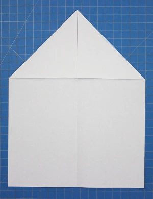
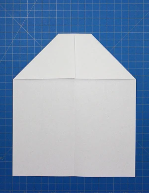
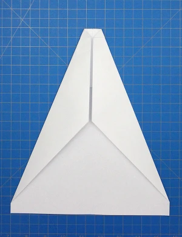

1Step 1
Fold the sheet in half and then fold both upper corner to the center.

Fold the sheet in half and then fold both upper corner to the center.

Next, fold the top point back about 3cm.

Fold both upper edges to the center line.

Fold the plane in half.

Grab a pair of scissors and cut out a slit like the one shown here.

Now, fold out the first wing.
With a calm day and a level throw, expect roughly 22–30 metres (about 72–98 feet). Among the 37 distance-rated designs in this collection it ranks #1. Wind, paper weight, and small crease errors all change the result.
在无风天气、水平投掷的情况下，大约能飞 大约 22–30 米。在站内 37 款远距机型中排第 1。风力、纸张克重和折痕误差都会改变实际结果。
A well-trimmed Lift Off should hold about 4–5 seconds of hang time. That places it #27 of 36 designs for time aloft. Launching from a higher spot and keeping the wings level will extend it.
调整得当的 Lift Off 可以保持大约 4–5 秒。在站内 36 款机型中滞空排第 27。从更高的位置轻投、保持两翼水平，都能延长滞空时间。
It is a distance dart rated Easy difficulty. Fold it from Letter & A4 in 6 steps and keep a pair of scissors handy.
它是一款远距机型，难度为简单，用Letter & A4折 6 步，需要准备剪刀。
Hold the plane level and throw with a smooth, firm push, aiming straight ahead rather than upward.
让机身保持水平，用平稳有力的推送直线投出，不要向上抛。